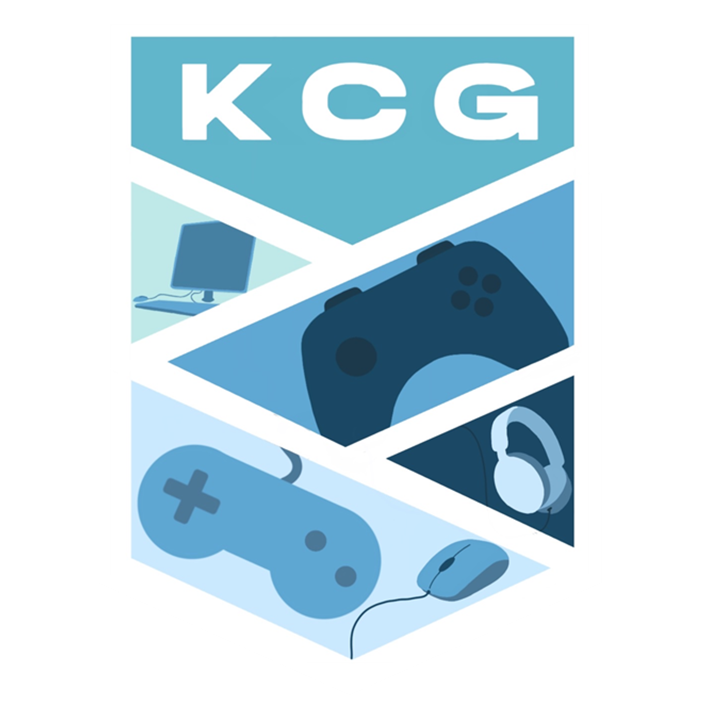

Welcome
The University Mario Kart League (UMKL) brings together students from across 8 (and counting) universities around the UK to compete as teams of six in Mario Kart 8 Deluxe!
Strategy and teamwork is essential in these matches. The team with the most points across the season will emerge victorious!
Next Match
View upcoming matches
Staffs
VS

Keele
Temp Logo
25 April 2025
18:00 - Test Match
News
View all newsRead this if you are interested in your uni joining the UMKL or if...

All matches are organised through the UMKL Discord server. Please join it to take part in a match!

We are a Mario Kart 8 Deluxe championship featuring teams from universities across the UK!